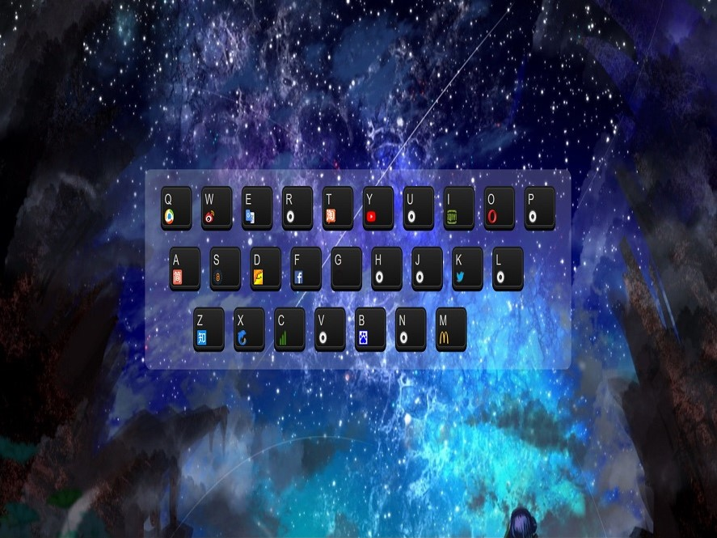

WX
吴潇
关于
技能
作品
作品1
作品2
作品3
博客
博客1
博客2
博客3
日历
联系方式
其他
Hi
吴 潇
前端开发工程师
年龄
23
性别
男
所在地
湖南
邮箱
1291383707@qq.com
手机号码
15115809369
请点击下载查看 PDF 简历
吴潇，本科2015年毕业于南华大学，前端开发工程师；
能力：熟悉前端开发、Rails开发、Node.js开发以及一些前端相关知识和领域。
我的技能
HTML 5 & CSS 3
JavaScript
jQuery
Vue
React
HTTP
作品集
全部
框架
原生 JS&CSS
